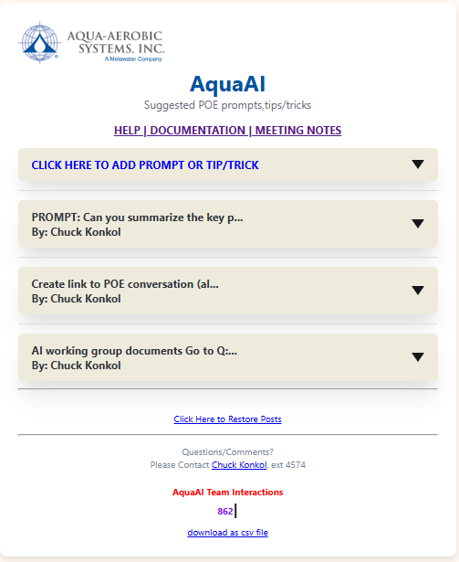

Go Back To AqauAI
The AquaAI web app was designed to help the AI working groups:
View help topics on the left to get started

Created with the Personal Edition of HelpNDoc: Single source CHM, PDF, DOC and HTML Help creation